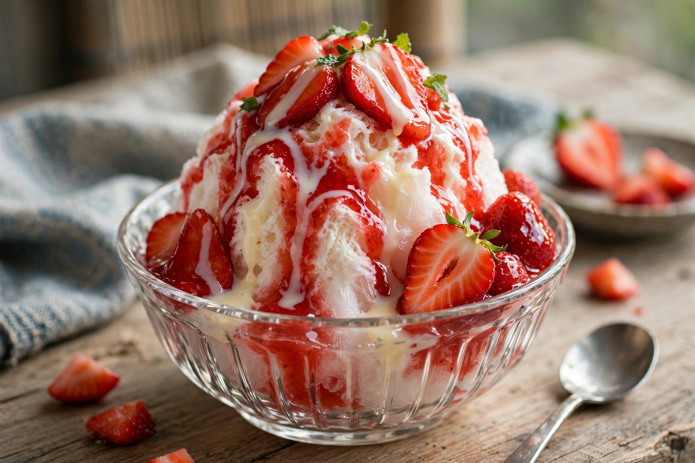

Shaved ice

Shaved ice is a large family of ice-based desserts made by shaving a block of ice and flavouring it with syrup, condensed milk, fruit, or sweet toppings. Because the ice is shaved very fine, it absorbs the flavouring instead of letting it sink to the bottom, and the texture is light and snow-like. Shaved ice desserts exist across Asia, the Americas, and the Pacific, under names including kakigōri, bingsu, halo-halo, and baobing.
Regional varieties
- Kakigōri (Japan) — shaved ice with flavoured syrup, often with sweetened condensed milk; flavours include strawberry, melon, matcha (uji kintoki, with red bean paste), and lemon. Its history reaches back to the Heian period, when ice stored in ice houses was shaved for aristocrats.
- Bingsu (Korea) — finely shaved milk-ice, classically patbingsu topped with sweet red beans, chewy rice cakes (tteok), and condensed milk; modern versions carry fruit, cheesecake, or coffee.
- Baobing / chhoah-peng (China and Taiwan) — shaved ice with toppings such as mango, taro balls, grass jelly, peanuts, and mung beans.
- Halo-halo (Philippines) — shaved ice and evaporated milk over sweet beans, jellies, fruits, and often ube halaya and leche flan; the name means "mix-mix."
- Ais kacang (Malaysia and Singapore) — shaved ice with red beans, sweet corn, grass jelly, syrups, and evaporated milk.
- Hawaiian shave ice — introduced by Japanese immigrants; fine shaved ice with tropical syrups, often over ice cream or azuki beans, with a "snow cap" of condensed milk.
- Piragua (Puerto Rico) and raspado (Mexico/Latin America) — street-vendor shaved ice with fruit syrups such as tamarind.
History
Iced desserts date to ancient Rome and Persia, but shaved ice in its modern form spread with Japanese migration in the late 19th and early 20th centuries and with the development of block-ice shaving machines. Taiwanese and Korean variants popularized milk-based "snow ice," shaved from flavoured frozen blocks into ribbon-like strands. Shaved ice differs from the coarser American snow cone, which uses crushed rather than shaved ice and has a crunchier texture.
See also